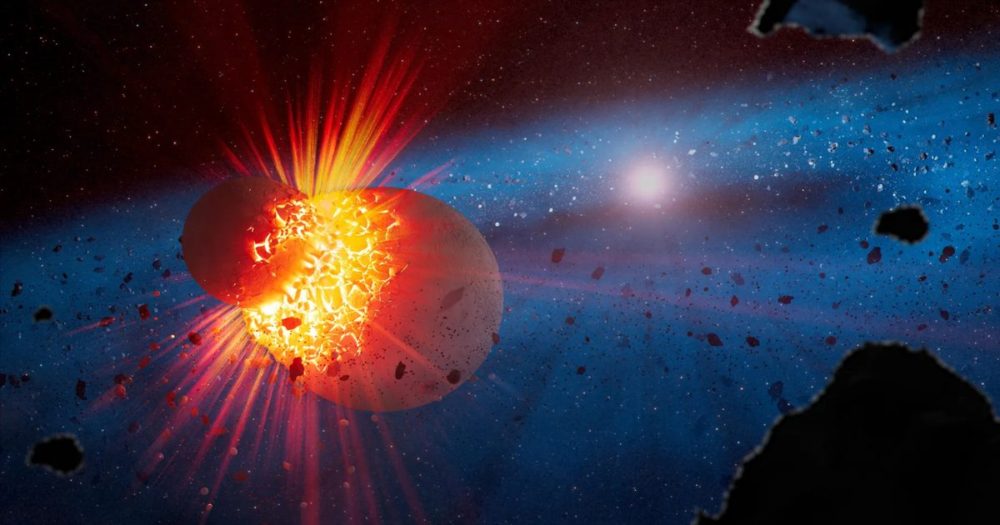

Webb НАСА находит признаки столкновения миров размером с Марс
Космический телескоп Джеймса Уэбба НАСА дает астрономам представление о видах жестоких столкновений, которые, возможно, сформировали нашу собственную Солнечную систему, включая гигантское столкновение, которое, как считается, создало Луну.
Изучив 21 редкий «экстремальный мусорный диск» вокруг молодых звезд, исследователи обнаружили, что их пыль может показать масштаб и интенсивность столкновений планет.